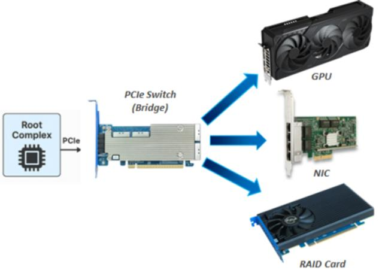
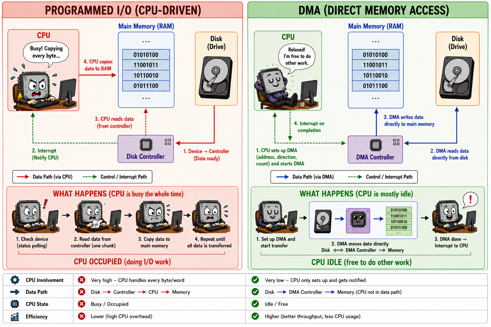

GPU job submission
Module thesis: there is no call the GPU instruction. The CPU tells a device what to do by reading and writing addresses — a small, expensive control path — and the device then moves the bulk data itself. Every kernel launch, every
.to('cuda'), everytorch.cuda.synchronize()is a protocol built out of those two halves — and the cost of that protocol is why the GPU numbers in the last lecture lied to us.
Last lecture was the memory hierarchy inside one chip. This one is the memory hierarchy between two chips. The next one goes back inside.
We are not going to start with a GPU. We are going to start with a movie file, because that is where your intuition already works — and by the time we have finished arguing about the movie, we will have derived most of a GPU driver.
Who moves the bytes?
You double-click a 4 GB movie file and it starts playing — instantly, smoothly, and you can still browse the web while it plays. Those 4 GB have to travel disk → RAM → GPU.
💬 Does the CPU execute a load and a store for every one of those bytes?
Cost the strawman before answering
Let us deliberately build the stupidest implementation that could possibly work: the CPU reads one 4-byte word from the disk controller and writes it to RAM, and repeats. Each of those device accesses is a round trip out to the device and back — we'll see when we get to PCIe that the number is about 1 microsecond:
4 GB / 4 B = 1.07 × 10⁹ transfers
× ~1 µs per device round trip ≈ 1070 s ≈ 18 minutes
Eighteen minutes of a 100%-busy core to read one movie file — and zero cycles left over to decode video. Even if a device register were as cheap as DRAM (~80 ns), it is still 86 seconds and a fully saturated core.
Playback would be impossible. Yet it demonstrably works. So whatever is happening, it is not this.
That number prices the naive design, not programmed I/O in general — a real one bursts through a device FIFO and moves far more per round trip. What survives the improvement is the shape: the CPU is in the data path, and its cost grows with the payload.
That style of transfer — the CPU moving the bytes itself with its own load/store instructions — has a name: programmed I/O (PIO). It is not a made-up villain. PC hard drives really were driven this way, and even the batched, FIFO-bursting versions topped out around 16.6 MB/s (ATA PIO mode 4) with a core pegged. We will find at the end of the lecture that PIO is not dead at all — it lost the data path and kept the control path.
But the strawman argument above is just arithmetic. Let us actually measure it.
Demo A — the argument: the CPU is not paid per byte
Prepare an 8 GB file once (takes a few seconds):
dd if=/dev/zero of=~/big.bin bs=1M count=8192 oflag=direct status=progress
code/gpu_submission/who_pays_per_byte.sh reads the same 512 MB three times, varying only the request size (bs), and records what the CPU is charged for each time:
./code/gpu_submission/who_pays_per_byte.sh ~/big.bin -q
bs |
requests |
bytes read | MB/s |
IRQs |
KB/IRQ |
CPU-seconds | % of 1 core |
|---|---|---|---|---|---|---|---|
| 4K | 131072 | 512 MB | 119 | 131156 | 4 | 1.374 | 32% |
| 64K | 8192 | 512 MB | 831 | 8192 | 64 | 0.149 | 24% |
| 4M | 128 | 512 MB | 1753 | 4086 | 128 | 0.059 | 20% |
The two bold columns are the argument. Everything else is the explanation.
Reading the columns. Every row moves the same 512 MB. Only bs changes.
| Column | Side | What it is |
|---|---|---|
bs |
knob | the request size — how many bytes we ask for in one read() |
requests |
CPU | how many reads that took: 512 MB ÷ bs |
bytes read |
fixed | 512 MB in every row, by construction — the experiment's control |
MB/s |
device | throughput achieved — how fast the bytes actually arrived |
IRQs |
device | interrupts the SSD raised during the run, read from /proc/interrupts — the device tapping the CPU on the shoulder to say "this one's done" |
KB/IRQ |
ratio | data moved per interrupt — how much movement one tap on the shoulder buys |
CPU-seconds |
CPU | user + system CPU time the read was charged, from /proc/<pid>/stat |
% of 1 core |
derived | CPU-seconds ÷ wall time, where wall time is 512 MB ÷ MB/s — how busy one core was while the read ran. Never above a third, and only a fifth at bs=4M: reading half a gigabyte leaves most of a core free for something else |
(bytes read and % of 1 core are worked out here; the script prints the rest.)
Now the argument — and it needs only the two bold columns above. Same bytes in every row. CPU cost swings 23×.
If the CPU were moving the data, that column would be flat — bytes are bytes, and even a maximally efficient copier still pays per byte. It is not flat. So the CPU is not being paid per byte, and whatever work it is doing is not proportional to the payload.
Be precise about what that buys us. The measurement gives a symptom — it kills the strawman without naming what replaced it. The mechanism comes from the architecture, and we will read it straight off the hardware two sections from now: the NVMe controller is a bus master, so it issues the memory writes itself. Experiment gives the symptom, architecture gives the mechanism — worth keeping separate every time you profile something.
No root, no profiler, no special hardware.
💬 If the CPU isn't paid per byte, what is it being paid for?
Answer
CPU-seconds tracks IRQs. Per interrupt the cost is roughly 10–18 µs and near-constant, even while throughput varies 15×. The CPU pays per completion, not per byte. (Not purely interrupt handling — syscall, filesystem and block-layer work ride along. The point is that all of it scales with the number of device operations and none of it with the payload.)
Note that it does not track requests. The 4M row issues 64× fewer read() calls than the 64K row, yet takes only 2× fewer interrupts and saves only 2.5× the CPU. What the CPU is billed for is what the device did, not what your program asked for.
And KB/IRQ topping out at 128 is the amortization unit: one notification to the CPU buys 128 KB of data movement.
Two kinds of traffic
So reading a file involves two different kinds of traffic, and they are not moved by the same thing.
- A few bytes that the CPU does move itself: "fetch me sectors 900,000–908,000." → the control plane
- 512 MB that something else moves: the payload. → the data plane
Everything we just measured was the price of the first. The second cost the CPU nothing.
| Control plane | Data plane | |
|---|---|---|
| Question it answers | how does the CPU say anything to a device? | how do the bytes actually move? |
| Traffic | a few bytes, rare, latency-sensitive | gigabytes, bulk, bandwidth-sensitive |
| Moved by | the CPU itself | the device itself |
| Mechanism | MMIO writes to device registers | DMA by a bus-mastering engine |
Every term for the rest of this lecture belongs in one column or the other. If you can place a new term in the right column, you have understood the lecture.
Both columns are the same question asked from opposite ends: how does a CPU talk to a device at all? The rest of this lecture answers it in four steps — the wire, the address, the bulk transfer, and the protocol that composes them.
How the CPU reaches a device: PCIe
Everything in both columns of that table travels over one link. Before we can price either plane, we need to know what the link actually is.
Peripheral Component Interconnect Express connects the CPU to everything that is not RAM: GPUs, NVMe drives, NICs. And despite the name, it is not a bus. Legacy PCI was: one shared set of parallel wires, every device electrically attached, one talker at a time, the whole thing clocked down to the slowest participant. PCIe kept the name and the software model — configuration space, BARs, bus:device.function addressing — for compatibility, and replaced the electrical design entirely with point-to-point, serial, full-duplex, switched links. Architecturally it is closer to Ethernet than to a bus.

- Root complex — the CPU's gateway to the fabric. It translates CPU loads and stores into PCIe transactions, and routes device traffic into memory.
- Switch — fans one link into many; also enables peer-to-peer transfers that never touch the CPU or host RAM (this is what GPUDirect is).
- Endpoint — a device, identified by BDF:
bus:device.function, e.g.03:00.0. That is whylspcilabels things the way it does, and why a graphics card shows up twice (.0the GPU,.1its HDMI audio device).
Everything is a TLP — and this is where the 1 µs came from
Nothing streams across PCIe. Every interaction is packaged into a Transaction Layer Packet (TLP) — an envelope carrying what, where, how much, and for a write, the data itself.
A CPU read of a device is two envelopes, one in each direction — and the core cannot proceed until the second one arrives:
NON-POSTED ── a completion must come back, so the requester waits
CPU ──▶ device ┌──────┬────────────┬────────┐
│ READ │ 0x12345678 │ 4 B │ "give me what is at this address"
└──────┴────────────┴────────┘
⋮ core stalled, ~1 µs
device ──▶ CPU ┌────────────┬────────────┐
│ COMPLETION │ 0xDEADBEEF │ "here it is"
└────────────┴────────────┘
A write is a single envelope with the payload inside, and nothing comes back:
POSTED ── no completion, so the CPU hands it off and moves on
CPU ──▶ device ┌───────┬────────────┬────────┬──────┐
│ WRITE │ 0x12345678 │ 4 B │ DATA │ ~100 ns to issue, then done
└───────┴────────────┴────────┴──────┘
Both ends speak the same language. A device originates TLPs exactly the way the CPU does — which is what makes DMA possible at all. (Below the transaction layer sit a data link layer and a physical layer, handling retries and pushing bits. The TLP is the letter; those are the tracking system and the trucks. Ignore them.)
Envelopes come in two categories, and between them they explain the entire cost model of this lecture:
| Category | Examples | Completion required? | Consequence |
|---|---|---|---|
| Posted | Memory Write | No — fire and forget | the CPU retires the store immediately; ordering needs explicit fences |
| Non-posted | Memory Read, Config Read/Write | Yes — a Completion TLP must come back | the requester stalls for the full round trip |
That asymmetry is a protocol category, not an implementation quirk, and it is the single most load-bearing fact in this lecture. A write to a device costs ~100 ns to issue and then the core moves on. A read from a device stalls the core for ~1–2 µs, uncacheable and unpipelined.
Go back to the strawman we costed at the start. The "~1 µs per transfer" that produced 18 minutes was not a rhetorical exaggeration — it is this row of this table, repeated 1.07 billion times.
That is enough PCIe for this lecture. One distinction has to survive — writes can be fired and forgotten; reads demand an answer — and everything below is built from it:
- DMA = a device emitting Memory Write/Read TLPs upstream. "Bus master" means: permitted to originate them.
- A doorbell = one posted Memory Write TLP.
- An MSI-X interrupt = also a Memory Write TLP, aimed at an address the CPU's interrupt controller watches. Modern PCIe has no interrupt pins — an interrupt is literally a memory write.
- BARs = the address ranges the root complex uses to route memory TLPs to the right endpoint. That is the next section.
How the CPU addresses a device: MMIO and BARs
The control plane — the smaller half of the movie question: how does the CPU say "fetch me sectors 900,000–908,000" to a disk at all?
A CPU can do exactly two things to the outside world: load from an address, and store to an address. There is no send_to_device instruction. So the only way to build device communication is to make some addresses mean something other than DRAM.
The physical address space is not RAM. It is a routing table.
0x0000_0000 ┌──────────────────────────┐
│ actual DRAM │ store → a capacitor changes
├──────────────────────────┤
0xFCB0_0000 │ GPU control registers │ store → a wire changes inside the GPU
│ (1 MB) │
├──────────────────────────┤
0xF800_0000_00 │ GPU VRAM aperture │ store → travels over PCIe into VRAM
│ (16 GB) │
└──────────────────────────┘
mov [0x1000], eax // lands in DRAM.
mov [0xFCB00000], eax // becomes a PCIe write TLP routed to the GPU.
0xFCB00000: the host's address-routing logic sees that the address falls inside a PCIe BAR rather than DRAM, and the root complex forwards the transaction down the link to device 03:00.0. Addresses that belong to RAM go to the memory controller instead. The routing decision is made on the address alone.
Note this is the physical address space, below paging. User code never sees it unless the kernel deliberately maps a window into a process.
BARs, and how they get their addresses
BAR = Base Address Register — the statement "this device owns this range of CPU physical address space."
Nobody hard-codes those addresses. During PCI enumeration, firmware (and then the operating system, which can reassign what firmware chose) walks the fabric and asks every device how much address space it needs; each answers with a size, and gets handed a non-overlapping range that is programmed into its BAR. Only after that does mov [0xFCB00000], eax reach the right card. The address map is assigned during enumeration, not fixed by design — which is why the numbers below are this machine's, and yours will differ.
Here is the GPU on the machine these numbers came from — real lspci -v output, with the long model string trimmed to fit:
lspci -v -s 03:00.0
03:00.0 Display controller: AMD/ATI Navi 22 [Radeon RX 6700 ... 6850M XT] (rev cf)
Subsystem: Micro-Star International Co., Ltd. [MSI] Navi 22
Flags: bus master, fast devsel, latency 0, IRQ 86, IOMMU group 11
Memory at f800000000 (64-bit, prefetchable) [size=16G]
Memory at fc00000000 (64-bit, prefetchable) [size=256M]
Memory at fcb00000 (32-bit, non-prefetchable) [size=1M]
Expansion ROM at fcc00000 [disabled] [size=128K]
Capabilities: <access denied>
Kernel driver in use: amdgpu
Line by line, in plain English:
| What it says | What it means |
|---|---|
03:00.0 |
the card's address on the fabric — bus 03, device 00, function 0. A street address, not a memory address |
Display controller: … Navi 22 |
what kind of device it is, and which chip |
Subsystem: … [MSI] |
who built the board around the chip. AMD made the silicon; MSI made the card |
bus master |
this device is allowed to move data by itself. This one flag is the DMA permission bit — the data plane, switched on |
IRQ 86 |
the number the device raises to interrupt the CPU when it has finished something |
IOMMU group 11 |
its protection domain — which regions of RAM its DMA is permitted to touch |
Memory at f800000000 … [size=16G] |
a 16 GB window of address space that is not RAM. Stores here travel over PCIe into the card's VRAM |
Memory at fc00000000 … [size=256M] |
a second 256 MB window — doorbells and framebuffer |
Memory at fcb00000 … [size=1M] |
1 MB of the card's control registers — the knobs the driver turns |
prefetchable |
reads here have no side effects on the device, so the platform is free to speculate, prefetch, reorder and combine accesses to this window — which is what makes a multi-gigabyte data aperture usable at all |
non-prefetchable |
the device may attach meaning to an individual access (a read can clear a status bit), so none of those liberties are safe: accesses must reach it as issued |
Expansion ROM … [disabled] |
the card's own boot firmware, switched off once the real driver takes over |
Capabilities: <access denied> |
needs sudo — link speed and width, MSI-X tables and power states live in here |
Kernel driver in use: amdgpu |
which driver claimed the device |
Two of those windows are the whole lecture:
- The 1 MB non-prefetchable window is the register file — the control plane.
- The 16 GB prefetchable window is a view onto VRAM — the data plane. Historically this was capped at 256 MB, a peephole; a full-size aperture means Resizable BAR is enabled.
Now the same command on the disk from the demo:
lspci -v -s 05:00.0
05:00.0 Non-Volatile memory controller: Sandisk WD PC SN540 NVMe SSD 1 TB
Flags: bus master, fast devsel, latency 0, IRQ 68, IOMMU group 14
Memory at fce00000 (64-bit, non-prefetchable) [size=16K]
Memory at fce04000 (64-bit, non-prefetchable) [size=256]
Kernel driver in use: nvme
Same three things: a bus master flag, an IRQ, and register windows. Only the sizes differ — 16 KB of registers instead of 1 MB, and no data aperture at all, because a disk never exposes its storage as address space. This is the device that moved 512 MB for 0.059 seconds of CPU at the start of the lecture. The mechanism was never GPU-specific.
Two BARs, two purposes: commands vs data. The split we derived from a movie file is sitting right there in lspci output.
The driver ioremaps the register BAR. The user-mode CUDA/HIP driver gets some of those pages mapped into your process — which is why a kernel launch needs no syscall at all.
What never gets an address: the pendrive
The address map was handed out at boot, by firmware, before you sat down. So there is an obvious objection to everything above.
💬 You plug in a USB drive an hour after boot. Which address range does it get?
Answer
None. It never gets one. Nothing in the physical address map changes when you insert it.
What is memory-mapped is the USB host controller — one more PCIe endpoint, with a register BAR assigned at boot exactly like the GPU and the NVMe drive above. The pendrive sits on the far side of it, on a packet-switched serial bus:
physical address space
┌──────────────────────────┐
│ ... │
│ xHCI registers (BAR) ◄─┼── assigned at boot, before anything was plugged in
│ ... │
└──────────────────────────┘
│ MMIO ▲ DMA
▼ │
[ xHCI controller ]
│ USB packets
▼
[ hub ] ─── [ pendrive ] ← no address here. ever.
Insertion is then handled entirely by machinery this lecture has already built:
- Detect. The port's electrical state changes. The controller sets a port-status-change bit in its own registers and raises MSI-X — which, from the TLP section, is itself just a posted memory write.
- Notice. The driver reads the event ring in DRAM. No new mapping is created; the BAR
ioremapped at boot already covers every register involved. - Address it. usbcore issues
SET_ADDRESS, giving the device a number 1–127. That is an address on the USB wire, in a namespace disjoint from physical memory. The CPU cannot load or store from it. - Bind. Descriptors say mass storage →
usb-storage/uas→ SCSI →/dev/sdbappears. - Move data. The driver builds transfer descriptors in RAM, performs one MMIO write to a doorbell, and the controller DMAs the sectors into RAM by itself.
Step 5 is this lecture's entire protocol, on a third device. The CPU never reads flash through a memory window.
Stated carefully: the host controller is memory-mapped; a device behind USB is reached through the USB protocol, not by being exposed as a range of CPU physical addresses. It is the same fact the NVMe lspci output showed by having no data aperture, pushed one step further — here not just the storage but the whole device sits outside the address space. Other buses arrange this their own way, so check each on its own terms rather than assuming; what generalises is the question to ask: is this thing addressed, or is it spoken to?
Where hot-plug does rewrite the address map
PCIe hot-plug — a Thunderbolt/USB4 dock, a hot-added NVMe drive. There the kernel must assign real BARs at plug time, and it can only do so if the bridge above reserved a large enough window up front (pci=hpmemsize=). Exhaust that window and the device enumerates but gets no BAR, so it is unusable. That failure mode cannot happen to a pendrive, because a pendrive was never going to consume address space in the first place.
And the one sense in which a pendrive does reach memory is pure software: its sectors land in the page cache, and mmap()ing a file on the mounted filesystem points your PTEs at those pages. A fault there triggers a block read → USB transfer → DMA → page filled. Demand paging, not MMIO — the two meanings of "mapped" are unrelated.
The cost asymmetry, priced
| Operation | What triggers it | Cost | Why |
|---|---|---|---|
| L1 hit | s += A[i] in last lecture's tiled matmul — the line is already in cache |
~1 ns | for scale |
| DRAM read | the same line at N=2048, once B stops fitting in L3 |
~80 ns | for scale |
| MMIO write | writel(tail, doorbell) — the driver telling the GPU "new work is queued" |
~100 ns to retire | posted — fire and forget, write-combinable |
| MMIO read | readl(status) — the driver asking the GPU "are you finished?" |
~1–2 µs | non-posted — synchronous PCIe round trip, uncacheable, serializing |
Rule: never ask the device anything; make the device tell you.
Every design choice in the rest of the lecture follows from that one line. A polling loop over an MMIO status register is catastrophic — a million polls is a second of stalled core. So status is instead written by the device into DRAM, where the CPU polls a cache line in its own memory for ~1 ns.
The one analogy for this lecture — the kitchen order rail
The waiter (CPU) writes tickets onto a rail (ring buffer in DRAM), rings the bell once (doorbell register, one MMIO write), and watches the pass for finished plates (fence value in host memory).
Walking into the kitchen to ask "done yet?" is the MMIO read — and it is the slow thing. A good waiter never does it.
Try it on your own machine
sudo cat /proc/iomem # the physical address map, devices interleaved with RAM
lspci -v -s <gpu-bdf> # the GPU's BAR windows and their sizes
lspci -v -s <nvme-bdf> # ...and the disk's, from the demo. Same mechanism, smaller window.
cat /sys/bus/pci/devices/*/resource # the same BAR table, as text
lsusb -t # ...and the devices that own no address at all
/proc/iomem is where "the address space is not RAM" stops being a claim and becomes a listing you can scroll. Run the GPU/disk pair on your own hardware: the window sizes will differ, the structure will not.
Then plug in a pendrive and re-run lspci and /proc/iomem: nothing changes. It shows up under lsusb -t, hanging off a controller whose BARs were fixed at boot — two different addressing worlds, visible in two commands.
How the device moves the bulk: DMA
The data plane — now the larger half: the 4 GB itself.

Pic credits: ChatGPTFrom demo A: someone other than the CPU must move these bytes, and it must not cost one round trip per word.
DMA lets a device read and write main memory by itself, with the CPU executing no instructions for the transfer. The CPU describes the job once — source, destination, length — and the device then issues its own memory transactions until it is done. A device permitted to do this is a bus master (that flag in lspci), and "issues memory transactions" means exactly what it did in the PCIe section:
GPU / NVMe ──▶ Memory Write TLPs ──▶ PCIe fabric ──▶ memory controller ──▶ DRAM
The mental correction it forces: data is not pushed to a device by the CPU. The device comes to RAM and takes it.
CPU (a few hundred ns of work, once):
write a descriptor — "read 1 GB from sector N into physical 0x8A000000"
one MMIO write to a doorbell
context-switch away; run something else entirely
DEVICE (autonomously, for seconds):
issues memory writes of its own, landing bytes straight in DRAM
zero CPU instructions executed for this
DEVICE (on completion):
raises an MSI-X interrupt → driver ISR runs → the blocked process is marked runnable
That middle phase is what Demo A measured. One control-plane transaction buys 128 KB of data-plane movement — the KB/IRQ column, and that ratio is the entire reason the two planes exist as separate mechanisms.
Three complications, each with a practical consequence
-
Virtual vs physical addresses. The DMA engine has no MMU and cannot take a page fault. Your array's virtual address is meaningless to it. A 40 MB user buffer is virtually contiguous but physically scattered across ~10,000 arbitrary 4 KB pages, so the driver builds a scatter-gather list — an array of (physical address, length) pairs — and the engine walks it.
-
Pageable vs pinned (page-locked) memory. The kernel may swap or migrate a page mid-transfer, which would corrupt memory. So DMA target pages must be pinned first. A copy from ordinary pageable memory therefore secretly does CPU memcpy → driver-owned pinned staging buffer → DMA: an extra full copy.
💬 This is exactly why two flags exist in every PyTorch training loop. Which ones?
Answer
loader = DataLoader(train_set, batch_size=256, pin_memory=True) for x, y in loader: x = x.to('cuda', non_blocking=True) y = y.to('cuda', non_blocking=True) loss = model(x, y)pin_memory=Trueallocates each batch in page-locked memory, so the DMA engine can read it where it lies — no hidden staging copy. How large the win is depends on your hardware and transfer size, so measure it rather than quoting a number — it is a twenty-line experiment.non_blocking=Truelets.to()return as soon as the copy is queued, so the CPU runs ahead and prepares the next batch while the copy engine works.
They are one mechanism, not two independent optimizations.
non_blocking=Truecan only buy you the full overlap when the source buffer is already fit for asynchronous DMA — in practice, pinned. From pageable memory the runtime must first make the data DMA-safe (a staging copy, possibly temporary pinning), and that work is not free to overlap. Setting it withoutpin_memory=Trueis the most common way to leave the benefit on the table.
The movie question, closed
This is what was happening during the dd demo: the CPU issued a handful of descriptors, the SSD's DMA engine moved the bytes, and Demo A measured ~20% of one core.
18 minutes → 3 seconds — and the difference is not a faster CPU. It is taking the CPU out of the data path.
Putting it together: queue, doorbell, completion
We now have two ways for the CPU and GPU to communicate:
- Ordinary memory + DMA — good for moving lots of information.
- MMIO — good for sending a tiny message to the GPU.
So instead of sending an entire GPU command through MMIO, the CPU does something smarter:
CPU GPU
1. Write commands
into a queue in RAM
[ A ][ B ][ C ]
↑
new commands
2. Ring doorbell ──────────→ "New work is waiting!"
(MMIO)
3. Read commands
from the queue
↓
Execute A, B, C
4. Wait for completion ←── 5. Mark "done"
The three important pieces are:
1. Ring buffer — "Here is the work."
The CPU puts GPU commands into a queue in ordinary memory.
RAM
┌─────┬─────┬─────┬─────┬─────┐
│ A │ B │ C │ │ │
└─────┴─────┴─────┴─────┴─────┘
↑
tail
Writing RAM is cheap, so the CPU can prepare many commands there.
2. Doorbell — "Go look at the queue."
Once the commands are ready, the CPU performs one small MMIO write to a GPU register:
CPU ─── MMIO write ───→ GPU
"tail = 3"
It doesn't send commands A, B and C through MMIO. It sends only a tiny notification:
"I've added work to the queue."
The GPU then fetches the commands and executes them.
3. Fence/completion — "I'm done."
The CPU eventually needs to know when the GPU has finished.
Instead of repeatedly asking the GPU over expensive MMIO:
CPU → "done?"
CPU → "done?"
CPU → "done?"
CPU → "done?"
the GPU updates a completion value in memory:
GPU ─── DMA write ───→ RAM
completed = 3
The CPU can check that memory or sleep until the GPU raises an interrupt.
So the entire protocol reduces to:
COMMANDS NOTIFY
CPU ─────────────→ RAM ─────────────→ GPU
stores MMIO
│
↓
executes
│
│ DMA
↓
CPU ←────────────── RAM ←──── DONE
This ordinary-memory queue is typically implemented as a ring buffer. The MMIO notification is called a doorbell. The completion value is a fence.
💬 Why a ring plus one doorbell, instead of one MMIO write per command?
Answer
PCIe's posted/non-posted asymmetry. Command packets are hundreds of bytes; pushing them through MMIO would be hundreds of posted writes, each unbatched and uncacheable, plus ordering fences. Writing them to DRAM costs ~1 ns each and the device fetches them in one burst.
So the expensive channel carries one transaction — an integer — and the cheap channel carries everything else. That is the same trade as KB/IRQ = 128 on the disk, arrived at from the other direction.
And completion cannot be a poll over PCIe, for the same reason. The CPU polls the fence value in its own DRAM (~1 ns, from cache) or sleeps on the interrupt. That distinction is exactly spin-wait vs blocking synchronization (cudaEventQuery vs cudaEventSynchronize).
Why the GPU appeared to beat its own peak
Last lecture we timed a matmul at 314 µs and got an implied 55 TFLOP/s on a GPU whose spec sheet says 10.6. We now have the mechanism to say exactly what was measured.
C = A_g @ B_g does three things: append command packets to the ring, write one doorbell, return. A few microseconds of CPU work — and the GPU may not have started. The stopwatch stopped when the work was queued.
start = time.perf_counter()
C = A_g @ B_g # returns once the doorbell is rung
torch.cuda.synchronize() # ← wait until the fence value reaches my ticket
elapsed = time.perf_counter() - start
torch.cuda.synchronize() is not a formality. It means block until the fence value the GPU DMA-writes into host memory is at least my ticket number. Without it you time the waiter writing the ticket, not the kitchen cooking.
If a measured throughput comfortably exceeds the hardware's advertised peak, check first whether you measured execution or merely submission. Other explanations exist — a different precision mode, sparsity, boost clocks, a vendor counting FLOPs its own way — but timing an enqueue is the one that manufactures impossible numbers this cheaply, and it costs one line to rule out.
What else falls out of the ring
- A CUDA stream behaves like an ordered command queue. Work within one stream is ordered; separate streams are independently schedulable, which is what makes overlap possible. Copy engines are separate queues from compute engines — that is the mechanism behind prefetching batch n+1 while computing batch n. Events are fences between streams. (How streams map onto actual hardware queues is a driver decision, not one ring per stream — take the queue as the mental model, not as the implementation.)
- Launch overhead is a first-class cost. ~3–10 µs per launch means a 2 µs kernel is launch-bound: the machine is spending more time being told what to do than doing it. This is the honest, mechanical reason for three things you have heard of and never had a reason for:
- kernel fusion — one launch instead of five, and the intermediates never leave the chip;
torch.compile— an automatic fuser;- CUDA Graphs — pre-record a whole sequence of submissions once, so it can be replayed with a fraction of the per-launch CPU work.
The callback — it was never a GPU idea
Go back to Demo A's table. Those requests and IRQs columns were NVMe submission and completion rings all along, with doorbell registers in the disk's BAR and completion entries DMA'd back to host memory. KB/IRQ = 128 was the amortization we have just spent twenty minutes re-deriving for GPUs.
Identical structure. The same pattern is RDMA NICs, and io_uring, and every high-performance device interface of the last fifteen years. It is not a GPU idea; it is the device idea — and you measured it on a disk before you believed it about a GPU.
(Mapping a doorbell page directly into user space, skipping the kernel on the submission path, is precisely what "kernel bypass" means.)
And a footnote that closes the opening loop
Programmed I/O is not obsolete. It lost the data plane and kept the control plane, because for a handful of bytes, building a descriptor and taking an interrupt costs more than just writing the value:
- Doorbells — one posted MMIO write. Textbook PIO, and the cheapest possible signal.
- Device configuration — every register poke at init, every BAR write, MSI-X table setup.
- Small-packet networking — some NICs expose a write-combining PIO path for tiny frames, where descriptor setup would dominate the payload.
Note the survivors are almost all writes. Posted writes are cheap; non-posted reads are designed out of every hot path — which is why completion is signalled by the device DMA-ing a flag into DRAM rather than the CPU ever reading a device register.
Where every term belongs
The two-column board from the start of the lecture, with everything we have added since placed on it. If you can do this from memory, you have the lecture:
| Term | Belongs to |
|---|---|
| BAR, MMIO, doorbell | control plane — CPU → device, small and expensive |
| DMA, bus master, scatter-gather, pinning | data plane — device → RAM, bulk and cheap per byte |
| TLP, posted vs non-posted | transport — how either plane crosses PCIe |
| Ring buffer | the shared structure the two planes meet in |
| Fence value | completion, reported into DRAM |
| MSI-X interrupt | notification — and itself a memory write |
| USB address (1–127) | not an address the CPU can use — a name on another bus |
mmap() |
a different concept entirely — virtual memory, not device I/O |
The last two rows are the ones worth guarding. "Mapped" means one thing when the root complex routes a physical address to a device, and something unrelated when the kernel points your page tables at the page cache. The pendrive is where those two meanings get confused.
PyTorch - Hardware-Software mental model
| PyTorch statement | Hardware-level mental model |
|---|---|
torch.tensor(...) |
CPU stores → DRAM |
x.to("cuda") |
queue transfer → MMIO doorbell → GPU DMA → VRAM |
x.to("cuda", non_blocking=True) |
queue DMA → CPU continues |
DataLoader(pin_memory=True) |
DMA-safe/pinned host pages |
model.to("cuda") |
submit transfers that copy the model's CPU-resident tensors into GPU VRAM using the host→device DMA path |
model(x) |
submit GPU commands → doorbell → GPU executes |
loss.backward() |
submit backward kernels |
optimizer.step() |
submit parameter-update kernels |
torch.cuda.synchronize() |
wait for GPU completion/fence |
torch.cuda.Event |
marker placed in GPU work stream |
torch.cuda.Stream() |
ordered GPU work queue |
torch.compile() |
potentially fewer/larger GPU submissions + fusion |
| CUDA Graph replay | reuse pre-recorded submission sequence |
References
- Vijay Janapa Reddi, Machine Learning Systems — Ch 11: AI Acceleration
- Linux kernel documentation:
Documentation/driver-api/device-io.rstandDocumentation/core-api/dma-api.rst - NVMe Base Specification — the submission/completion queue model and doorbell registers. The disk-to-GPU callback in its primary source; the queue-model sections are short and readable.
- PCI Express Base Specification — configuration space and BAR enumeration (reference, not reading)
- NVIDIA, CUDA C++ Best Practices Guide — asynchronous transfers, streams, CUDA Graphs